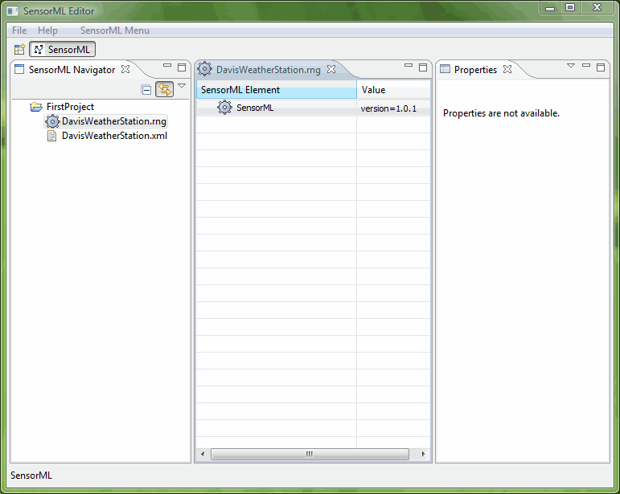

Editors and Views
After you have created your SensorML Instance of DavisWeatherStation, return to the SensorML Editor. In the SensorML Navigator you will see your project containing two files. Both of these files have the same name, but a different extension: .rng and .xml. The SensorML Editor only provides the tools to edit the *.rng file and NOT the .xml file. The *.rng file is a hybrid version of xml and RelaxNG (See Concepts). Each time you save your *.rng file, the corresponding *.xml file is updated and saved. The *.xml version is your product. It is important to keep these files synchronized. Therefore, it is not advisable to edit either of these files outside of the SensorML Editor unless you are prepared to loose the ability to continue editing this specific instance.
NOTE: A filtering mechanism is available if you do not wish to see the *.xml within your project. It will still exist in your workspace, however. To access this filter, simply right click on the mouse within the SensorML Navigator and select the "Filter" and then "Set". A menu will appear in which you can specify the pattern "*.xml" and select the checkbox for "Hide the matching selection".
In the editor pane, we have the initial content of a new SensorML instance. At this point, we are ready to begin adding SensorML elements to the *.rng file to complete the SensorML description of the Davis Weather Station.
